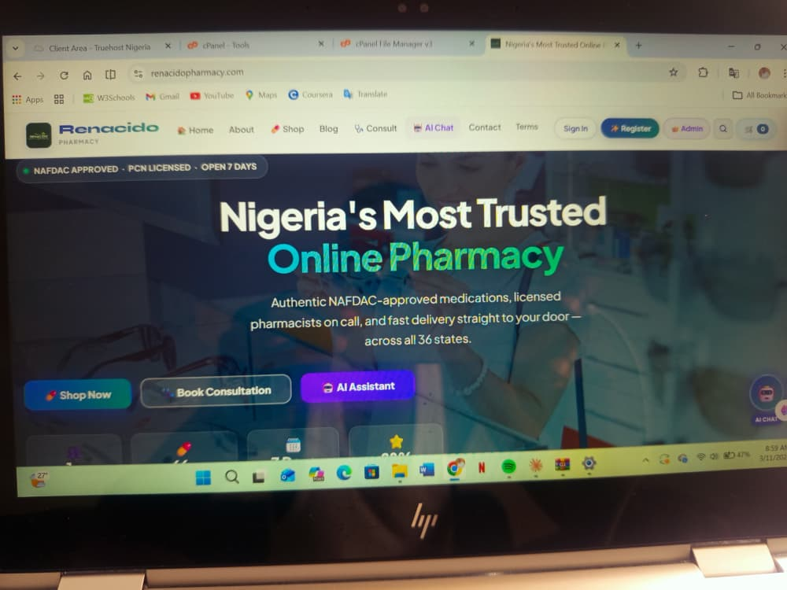

Renacido Pharmacy
An e-commerce pharmacy platform with a product catalogue, shopping cart, checkout, order tracking, and a store management dashboard.
Visit live websiteWeb developer · Data analyst · Abuja, Nigeria
I’m Julius, a developer and data professional who builds reliable web experiences, makes information easier to use, and helps people get more from technology.

A little about me
I’m Julius Chibuzo Odo-Eke, a web developer and data professional based in Karu, FCT, Abuja. I enjoy taking a real-world need and making the solution clear, dependable, and easy to use.
My work spans client websites, data reporting, healthcare information systems, and ICT education. I’ve delivered an e-commerce platform for Renacido Pharmacy and bring a practical, end-to-end approach to every project—from gathering requirements through testing and launch.
Selected work
A selection of client work and practical projects across web development, data, and technology education.

An e-commerce pharmacy platform with a product catalogue, shopping cart, checkout, order tracking, and a store management dashboard.
Visit live websiteA responsive, static portfolio designed to present work, experience, and contact information with no server or database required.
You’re viewing itA spreadsheet-based tool for recording daily transactions, calculating totals, and reviewing monthly sales trends.
A practical ICT learning programme introducing secondary school students to digital tools, basic programming, and problem-solving.
No projects in this category yet.
Where I’ve been
Each role has shaped how I communicate, solve problems, and deliver work with care.
Self-employed · FCT, Abuja
Builds client websites and digital solutions, including the Renacido Pharmacy e-commerce platform. Handles requirements, implementation, testing, deployment, and follow-up support.
Samkings Secondary School · Abuja
Taught computer fundamentals, Microsoft Office, and introductory programming to junior and senior secondary students.
Holy Spirit Secondary School · Ebenebe, Anambra
Taught Agricultural Science and Physical & Health Education across senior and junior classes during national service.
ICT Department · Nsukka, Enugu State
Supported computer maintenance, software troubleshooting, staff training, data entry, and record keeping.
Samez Paints and Chemicals · Nsukka
Tracked sales and prepared reports in Excel, using trends to support pricing and restocking decisions.
Bentevi Pharmacy / IHVN · Karu, FCT
Maintained patient records and supported reporting workflows using healthcare information systems.
What I bring
A practical toolkit shaped by real projects, reporting work, healthcare data, and teaching.
Building and maintaining useful, responsive web experiences.
Organising information, finding patterns, and communicating results clearly.
Comfortable working with productivity tools and structured health data systems.
Bringing clarity, reliability, and a collaborative mindset to the work.
Learning & credentials
University of Nigeria, Nsukka
Studied statistics, data analysis, and research methodology alongside core science modules.
Universal Comprehensive Secondary School, Nsukka
Completed secondary education with NECO and WAEC certificates.
Have a project in mind?
For web development, data work, or ICT opportunities, reach out directly. I’d be glad to hear what you’re working on.